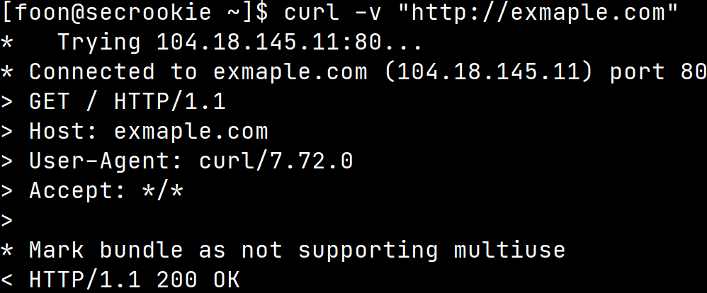
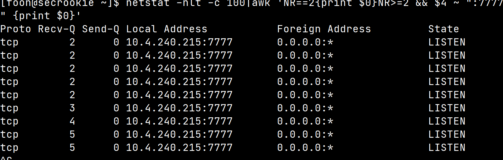

tcp/ip网络模型
tcp/ip 网络模型
分为五层，从上到下为应用层、传输层、网络层、数据链路层、物理层。
应用层协议
http（超文本传输协议）
可以通过curl url -v查看一次完整的http请求过程

以上的流程可以总结为：
1、和服务器的端口建立tcp链接（默认为80端口）
2、发送http请求，包含请求头和请求体，请求头包含多个键值对key1:value1每行以\r\n分割，当遇到两个\r\n表示请求头的结束，接下来全是请求体
3、服务器返回响应，包含响应头和响应体，格式与http请求基本相同
4、和服务器断开tcp链接
dns（域名系统）
由于32位二进制的ip地址十分难记，我们使用域名来方便记忆。但是计算机不认识域名，前辈们就开发了dns域名系统，实现域名和ip的转换。
由于计算机无法理解dns系统之间的交流方式，所以通常通过一个resolver来和域名系统交流。我们将dns请求发给resolver,resolver来和dns交流，并返回给我们一个ip。查询域名为www.example.com的ip，完整的交流过程为：
1、计算机将dns请求发给resolver
2、resolver询问根服务器，根服务器不知道，但是.com服务器知道。
3、于是resolver询问com服务器，com服务器表示exmaple.com知道
4、询问example.com,得到ip地址
当然，由于缓存的存在，通常我们不需要走完全程，例如resolver缓存了dns查询记录，我们直接就可以拿到结果。再比如我们缓存了com服务器知道结果，则直接询问com服务器。
ssh
使用公私钥加密方式，提供安全的隧道。
传输层协议
tcp
tcp报文记录了源端口和目的端口
端口一共有65535个，前1024个为公认端口，他们紧密绑定了一些服务。只有root有权限控制。
发送http请求时，源端口为系统任意选择大于1024的任意端口，目的端口默认为80
握手过程分为三步
1、客户端发送SYN=x，请求建立连接，客户端状态为syn-send
2、服务器收到，发送SYN=y,ACK=x+1,服务器状态为syn-received
3、客户端收到请求，发送ACK=y+1,连接建立
对于tcp的实现socket来说
服务端
1、使用socket创建监听套接字listenfd，调用bind绑定端口，调用listen监听端口,监听之后，套接字从CLOSED状态变为LISTEN状态
2、收到客户端发来的SYN报文，回复SYN+ACK,这时在未完成连接队列中创建一个新项目,并设置为SYN_RECV状态，然后继续监听listenfd
3、再次收到对应的ACK报文,把连接未完成队列中的项目移入连接已完成队列，并设置为ESTABLISHED状态
4、服务器通过accept进行消费，从已完成队列中拿取连接
netstat命令的Recv-Q和Send-Q表示的就是socket buffer相关的内容
对于监听状态的套接字，Recv-Q表示的是未完成队列中的连接个数，Send-Q表示的是未完成连接队列的最大连接限制个数
对于已经建立的tcp连接，Recv-Q列表示的是recv buffer中还未被用户进程拷贝走的数据大小，
Send-Q表示的是远程主机还未返回ACK消息的数据大小

网络层
ip
ipv4地址由32位二进制表示，也可以每八位一组来表示。
IP地址范围为0.0.0.0-255.255.255.255
其中10.0.0.0～10.255.255.255、172.16.0.0～172.16.255.255、192.168.0.0～192.168.255.255为内网地址，在公网上不分配，127开头的为环回地址，代表本机。
主机号全为0的表示直接广播地址，主机号全为1的表示受限广播地址，区别为广播是否会被发给路由器。
icmp
icmp报文包含在ip报文中，头部的type说明icmp报文的作用
常见的type有
0：echo reply ping 应答
8：echo request ping请求
ipsec
本博客所有文章除特别声明外，均采用 CC BY-SA 4.0 协议 ，转载请注明出处！